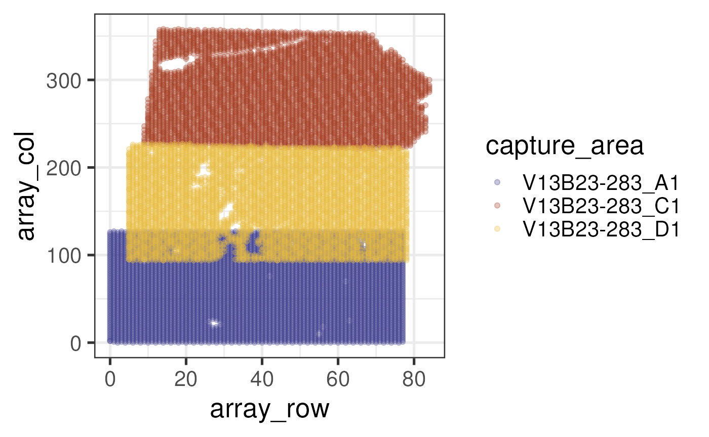

Introduction to visiumStitched
Nicholas J. Eagles
Lieber Institute for Brain Developmentnickeagles77@gmail.com
Leonardo Collado-Torres
Lieber Institute for Brain DevelopmentCenter for Computational Biology, Johns Hopkins UniversityDepartment of Biostatistics, Johns Hopkins Bloomberg School of Public Healthlcolladotor@gmail.com
26 July 2024
Source:vignettes/visiumStitched.Rmd
visiumStitched.RmdBasics
Install visiumStitched
visiumStitched
is a R package available from GitHub. It
can be installed with the following commands in your R
session:
if (!requireNamespace("remotes", quietly = TRUE)) {
install.packages("remotes")
}
remotes::install("LieberInstitute/visiumStitched")Citing visiumStitched
We hope that visiumStitched will be useful for your research. Please use the following information to cite the package and the overall approach. Thank you!
## Citation info
citation("visiumStitched")
#> To cite package 'visiumStitched' in publications use:
#>
#> Eagles NJ, Collado-Torres L (2024). _Enable downstream analysis of
#> Visium capture areas stitched together with Fiji_.
#> doi:10.18129/B9.bioc.visiumStitched
#> <https://doi.org/10.18129/B9.bioc.visiumStitched>,
#> https://github.com/LieberInstitute/visiumStitched/visiumStitched - R
#> package version 0.99.0,
#> <http://www.bioconductor.org/packages/visiumStitched>.
#>
#> Eagles NJ, Bach S, Tippani M, Du Y, Hyde TM, Page SC, Martinowich K,
#> Collado-Torres L (2024). "visiumStitched." _bioRxiv_.
#> doi:10.1101/TODO <https://doi.org/10.1101/TODO>,
#> <https://www.biorxiv.org/content/10.1101/TODO>.
#>
#> To see these entries in BibTeX format, use 'print(<citation>,
#> bibtex=TRUE)', 'toBibtex(.)', or set
#> 'options(citation.bibtex.max=999)'.Packages used in this vignette
Let’s load the packages we’ll use in this vignette.
library("SpatialExperiment")
library("visiumStitched")
library("dplyr")
library("spatialLIBD")
library("BiocFileCache")
library("ggplot2")Preparing Experiment Information
Much of the visiumStitched package uses a
tibble (or data.frame) defining information
about the experiment. Most fundamentally, the group column
allows you to line up which capture areas, in the
capture_area column, are to be stitched together later. In
our case, we have just one unique group, consisting of all three capture
areas. Note multiple groups are supported. By the end of this demo, the
SpatialExperiment will consist of just one sample composed
of the three capture areas; in general, there will be one sample per
group.
## Create initial sample_info
sample_info <- tibble::tibble(
group = "Br2719",
capture_area = c("V13B23-283_A1", "V13B23-283_C1", "V13B23-283_D1")
)
## Initial sample_info
sample_info
#> # A tibble: 3 × 2
#> group capture_area
#> <chr> <chr>
#> 1 Br2719 V13B23-283_A1
#> 2 Br2719 V13B23-283_C1
#> 3 Br2719 V13B23-283_D1Next, we’ll need the Spaceranger outputs for each capture area, which
can be retrieved with spatialLIBD::fetch_data().
## Download example SpaceRanger output files
sr_dir <- tempdir()
temp <- unzip(spatialLIBD::fetch_data("visiumStitched_brain_spaceranger"),
exdir = sr_dir)
#> 2024-07-26 18:35:25.661588 loading file /github/home/.cache/R/BiocFileCache/2aa161edeab_visiumStitched_brain_spaceranger.zip%3Frlkey%3Dbdgjc6mgy1ierdad6h6v5g29c%26dl%3D1
sample_info$spaceranger_dir <- file.path(
sr_dir, sample_info$capture_area, "outs", "spatial"
)
## Sample_info with paths to SpaceRanger output directories
sample_info
#> # A tibble: 3 × 3
#> group capture_area spaceranger_dir
#> <chr> <chr> <chr>
#> 1 Br2719 V13B23-283_A1 /tmp/RtmpzaGKBG/V13B23-283_A1/outs/spatial
#> 2 Br2719 V13B23-283_C1 /tmp/RtmpzaGKBG/V13B23-283_C1/outs/spatial
#> 3 Br2719 V13B23-283_D1 /tmp/RtmpzaGKBG/V13B23-283_D1/outs/spatialPreparing Inputs to Fiji
The visiumStitched workflow makes use of Fiji, a distribution of the
ImageJ image-processing software, which includes an
interface for aligning images on a shared coordinate system. Before
aligning anything in Fiji, we need to ensure that images to align from
all capture areas are on the same scale– that is, a pixel in each image
represents the same distance. This is typically approximately true, but
is not guaranteed to be exactly true, especially when the capture areas
to align come from different Visium slides.
rescale_fiji_inputs() reads in the high-resolution
tissue images for each capture area, and uses info about their spot
diameters in pixels and scale factors to rescale the images
appropriately (even if they are from different Visium slides).
For demonstration purposes, we’ll set out_dir to a
temporary location. Typically, it would really be any suitable directory
to place the rescaled images for later input to Fiji.
# Generate rescaled approximately high-resolution images
sample_info <- rescale_fiji_inputs(sample_info, out_dir = tempdir())
## Sample_info with output directories
sample_info
#> # A tibble: 3 × 5
#> group capture_area spaceranger_dir intra_group_scalar group_hires_scalef
#> <chr> <chr> <chr> <dbl> <dbl>
#> 1 Br2719 V13B23-283_A1 /tmp/RtmpzaGKBG/V1… 1.00 0.0825
#> 2 Br2719 V13B23-283_C1 /tmp/RtmpzaGKBG/V1… 1.00 0.0825
#> 3 Br2719 V13B23-283_D1 /tmp/RtmpzaGKBG/V1… 1 0.0825Building a SpatialExperiment
Stitching Images with Fiji
Before building a SpatialExperiment for a stitched
dataset, we must align the images for each group in Fiji. Check out this video for a
guide through this process with the example data.
Creating Group-Level Samples
From the Fiji alignment, two output files will be produced: an
XML file specifying rigid affine transformations for each
capture area, and the stitched approximately high-resolution image.
These files for this dataset are available through
spatialLIBD::fetch_data(). We’ll need to add the paths to
the XML and PNG files to the fiji_xml_path and
fiji_image_path columns of sample_info,
respectively.
fiji_dir <- tempdir()
temp <- unzip(fetch_data("visiumStitched_brain_Fiji_out"), exdir = fiji_dir)
#> 2024-07-26 18:35:40.787131 loading file /github/home/.cache/R/BiocFileCache/2aa366ab32d_visiumStitched_brain_fiji_out.zip%3Frlkey%3Dptwal8f5zxakzejwd0oqw0lhj%26dl%3D1
sample_info$fiji_xml_path <- temp[grep("xml$", temp)]
sample_info$fiji_image_path <- temp[grep("png$", temp)]We now have every column present in sample_info that
will be necessary for any visiumStitched function.
## Complete sample_info
sample_info
#> # A tibble: 3 × 7
#> group capture_area spaceranger_dir intra_group_scalar group_hires_scalef
#> <chr> <chr> <chr> <dbl> <dbl>
#> 1 Br2719 V13B23-283_A1 /tmp/RtmpzaGKBG/V1… 1.00 0.0825
#> 2 Br2719 V13B23-283_C1 /tmp/RtmpzaGKBG/V1… 1.00 0.0825
#> 3 Br2719 V13B23-283_D1 /tmp/RtmpzaGKBG/V1… 1 0.0825
#> # ℹ 2 more variables: fiji_xml_path <chr>, fiji_image_path <chr>Before building the SpatialExperiment, the idea is to
create a directory structure very similar to Spaceranger’s
spatial outputs for each group, as opposed to the
capture-area-level directories we already have. We’ll place
this directory in a temporary location that will later be read in to
produce the final SpatialExperiment.
First, prep_fiji_coords() will apply the rigid affine
transformations specified by Fiji’s output XML file to the spatial
coordinates, ultimately producing a group-level
tissue_positions.csv file. Next,
prep_fiji_image() will rescale the stitched image to have a
default of 1,200 pixels in the longest dimension. The idea is that in an
experiment with multiple groups, the images stored in the
SpatialExperiment for any group will be similarly scaled
and occupy similar memory footprints.
## Prepare the Fiji coordinates and images.
## These functions return the file paths to the newly-created files that follow
## the standard directory structure from SpaceRanger (10x Genomics)
spe_input_dir <- tempdir()
prep_fiji_coords(sample_info, out_dir = spe_input_dir)
#> [1] "/tmp/RtmpzaGKBG/Br2719/tissue_positions.csv"
prep_fiji_image(sample_info, out_dir = spe_input_dir)
#> [1] "/tmp/RtmpzaGKBG/Br2719/tissue_lowres_image.png"
#> [2] "/tmp/RtmpzaGKBG/Br2719/scalefactors_json.json"Constructing the Object
We now have all the pieces to create the
SpatialExperiment object. After constructing the base
object, information related to how spots may overlap between capture
areas in each group is added. The sum_umi
metric will by default determine which spots in overlapping regions to
exclude in plots. In particular, at regions of overlap, spots from
capture areas with higher average UMI (unique molecular identifier)
counts will be plotted, while any other spots will not be shown using
spatialLIBD::vis_clus(),
spatialLIBD::vis_gene(), and related visualization
functions. We’ll also mirror the image and gene-expression data to match
the orientation specified at the wet bench. More info about performing
geometric transformations is here.
## Download the Gencode v32 GTF file which is the closest one to the one
## that was used with SpaceRanger. Note that SpaceRanger GTFs are available at
## https://cf.10xgenomics.com/supp/cell-exp/refdata-gex-GRCh38-2024-A.tar.gz
## but is too large for us to download here since it includes many other files
## we don't need right now.
## However, ideally you would adapt this code and use the actual GTF file you
## used when running SpaceRanger.
bfc <- BiocFileCache::BiocFileCache()
gtf_cache <- bfcrpath(
bfc,
paste0(
"ftp://ftp.ebi.ac.uk/pub/databases/gencode/Gencode_human/",
"release_32/gencode.v32.annotation.gtf.gz"
)
)
## Now we can build the SpatialExperiment object
spe <- build_spe(
sample_info,
coords_dir = spe_input_dir, reference_gtf = gtf_cache
)
#> Building SpatialExperiment using capture area as sample ID
#> 2024-07-26 18:35:44.035847 SpatialExperiment::read10xVisium: reading basic data from SpaceRanger
#> 2024-07-26 18:35:50.972202 read10xVisiumAnalysis: reading analysis output from SpaceRanger
#> 2024-07-26 18:35:51.371096 add10xVisiumAnalysis: adding analysis output from SpaceRanger
#> 2024-07-26 18:35:51.720437 rtracklayer::import: reading the reference GTF file
#> 2024-07-26 18:36:22.768934 adding gene information to the SPE object
#> Warning: Gene IDs did not match. This typically happens when you are not using
#> the same GTF file as the one that was used by SpaceRanger. For example, one
#> file uses GENCODE IDs and the other one ENSEMBL IDs. read10xVisiumWrapper()
#> will try to convert them to ENSEMBL IDs.
#> Warning: Dropping 2226 out of 38606 genes for which we don't have information
#> on the reference GTF file. This typically happens when you are not using the
#> same GTF file as the one that was used by SpaceRanger.
#> 2024-07-26 18:36:22.997012 adding information used by spatialLIBD
#> Overwriting imgData(spe) with merged images (one per group)
## The images in this example data have to be mirrored across the horizontal axis.
spe <- SpatialExperiment::mirrorObject(spe, axis = "h")The colData(spe)$exclude_overlapping column controls
which spots to drop for visualization purposes. Note also that the
overlap_key column was added, which gives a comma-separated
string of spot keys overlapping each given spot, or the empty string
otherwise. After spatial clustering, the overlap_key
information can be useful to check how frequently overlapping spots are
assigned the same cluster.
## Examine spots to exclude for plotting
table(spe$exclude_overlapping)
#>
#> FALSE TRUE
#> 13426 1550Examining the stitched data
Stitched plotting
To demonstrate that we’ve stitched both the gene expression and image
data successfully, we’ll use
spatialLIBD::vis_gene(is_stitched = TRUE) (version 1.17.8
or newer) to plot the distribution of white matter spatially. For more
context on human brain white matter spatial marker genes, check our previous work on
this subject.
## Show combined raw expression of white-matter marker genes
wm_genes <- rownames(spe)[
match(c("MBP", "GFAP", "PLP1", "AQP4"), rowData(spe)$gene_name)
]
vis_gene(spe, geneid = wm_genes, assayname = "counts", is_stitched = TRUE)Note that we’re plotting raw counts; prior to normalization, library-size variation across spots can bias the apparent distribution. Later, we’ll show that normalization is critical to producing a visually seamless transition between overlapping capture areas.
Defining Array Coordinates
Given that the stitched data is larger than a default Visium capture
area, add_array_coords() (which is used internally by
build_spe()) recomputed the array coordinates
(i.e. spe$array_row and spe$array_col) to more
sensibly index the stitched data.
Let’s explain this in more detail. By definition, these array
coordinates (see documentation
from 10X) are integer indices of each spot on a Visium capture area,
numbering the typically 78 and 128 rows and columns, respectively, for a
6.5mm capture area. The build_spe() function retains each
capture area’s original array coordinates,
spe$array_row_original and
spe$array_col_original, but these are typically not useful
to represent our group-level, stitched data. In fact, each stitched
capture area has the same exact array coordinates, despite having
different spatial positions after stitching. We’ll take in-tissue spots
only and use transparency to emphasize the overlap among capture
areas:
## Plot positions of default array coordinates, before overwriting with more
## meaningful values. Use custom colors for each capture area
ca_colors = c("#A33B20", "#e7bb41", "#3d3b8e")
names(ca_colors) = c("V13B23-283_C1", "V13B23-283_D1", "V13B23-283_A1")
colData(spe) |>
as_tibble() |>
filter(in_tissue) |>
ggplot(
mapping = aes(
x = array_row_original, y = array_col_original, color = capture_area
)
) +
geom_point(alpha = 0.3) +
scale_color_manual(values = ca_colors)Let’s contrast this with the array coordinates recomputed by
visiumStitched. Briefly, visiumStitched forms
a new hexagonal, Visium-like grid spanning the space occupied by all
capture areas after stitching. Then, the true spot positions are fit to
the nearest new spot positions, in terms of Euclidean distance. Finally,
array coordinates are re-indexed according to the new spot assignments,
resulting in spatially meaningful values that apply at the group level
for stitched data.
## Plot positions of redefined array coordinates
colData(spe) |>
as_tibble() |>
filter(in_tissue) |>
ggplot(
mapping = aes(
x = array_row, y = array_col, color = capture_area
)
) +
geom_point(alpha = 0.3) +
scale_color_manual(values = ca_colors)
An important downstream application of these array coordinates, is
that it enables methods that rely on the hexagonal grid structure of
Visium to find more than the original six neighboring spots. This
enables clustering with BayesSpace
or PRECAST,
to treat each group as a spatially continuous sample. We can see here
how BayesSpace:::.find_neighbors()
version 1.11.0 uses the hexagonal Visium grid properties to find the
spot neighbors. See also BayesSpace
Figure 1b for an illustration of this process.
Yet, it doesn’t matter if there are actually two or more spots on
each of those six neighbor positions. visiumStitched takes
advantage of this property to enable BayesSpace and other
spatially-aware clustering methods to use data from overlapping spots
when performing spatial clustering. You can then use
colData(spe)$overlap_key to inspect whether overlapping
spots were assigned to the same spatial cluster.
Geometric transformations
As a SpatialExperiment, the stitched data may be rotated
or mirrored by group, such as with the
SpatialExperiment::rotateObject() or
SpatialExperiment::mirrorObject() functions. These
functions are useful in case the image needs to be transformed to reach
the preferred tissue orientation.
## Rotate image and gene-expression data by 180 degrees, plotting a combination
## of white-matter genes
vis_gene(
rotateObject(spe, sample_id = "Br2719", degrees = 180),
geneid = wm_genes, assayname = "counts", is_stitched = TRUE
)
## Mirror image and gene-expression data across a vertical axis, plotting a
## combination of white-matter genes
vis_gene(
mirrorObject(spe, sample_id = "Br2719", axis = "v"),
geneid = wm_genes, assayname = "counts", is_stitched = TRUE
)
A note on normalization
As noted above, library-size variation across spots can bias the
apparent spatial distribution of genes when raw counts are used. The
effect is often dramatic enough that spatial trends cannot be easily
seen across the stitched data until data is log-normalized. Instead of
performing normalization here, we’ll fetch the object with normalized
counts from spatialLIBD, then plot a few white matter genes
as before:
## Grab SpatialExperiment with normalized counts
spe_norm <- fetch_data(type = "visiumStitched_brain_spe")
#> 2024-07-26 18:36:31.772382 loading file /github/home/.cache/R/BiocFileCache/2aa316c4122_visiumStitched_brain_spe.rds%3Frlkey%3Dnq6a82u23xuu9hohr86oodwdi%26dl%3D1
wm_genes_ens <- rownames(spe_norm)[
match(c("MBP", "GFAP", "PLP1", "AQP4"), rowData(spe_norm)$gene_name)
]
## Plot combination of normalized counts for some white-matter genes
vis_gene(
spe_norm,
geneid = wm_genes_ens, assayname = "logcounts", is_stitched = TRUE
)
Recall the unnormalized version of this plot, which is not nearly as clean:
## Plot raw counts, which are noisier
vis_gene(
spe,
geneid = wm_genes, assayname = "counts", is_stitched = TRUE
)
The actual normalization code for this example data is available here.
Downstream applications
One common area of analysis in spatial transcriptomics involves
clustering– in particular, spatially-aware clustering. Many
spatially-aware clustering algorithms check the array coordinates to
determine neighboring spots and ultimately produce spatially smooth
clusters. As we have previously explained, visiumStitched
re-computes array coordinates in a
meaningful way, such that software like BayesSpace
and PRECAST
work out-of-the-box with stitched data, treating each group as a single
continuous sample.
We’ve
already run PRECAST, and can visualize the results here, where we
see a fairly seamless transition of cluster assignments across
capture-area boundaries. First, let’s examine k = 2:
## PRECAST k = 2 clusters with our manually chosen colors
vis_clus(
spe_norm,
clustervar = "precast_k2",
is_stitched = TRUE,
colors = c(
"1" = "gold",
"2" = "darkblue",
"NA" = "white"
)
)
We can see that these two spatial clusters are differentiating the white vs the gray matter based on the white matter marker genes we previously visualized.
In the example data, k = 4 and k =8 have
also been computed. Let’s visualize the k = 4 results.
## PRECAST results already available in this example data
vars <- colnames(colData(spe_norm))
vars[grep("precast", vars)]
#> [1] "precast_k2" "precast_k4" "precast_k8"
## PRECAST k = 4 clusters with default cluster colors
vis_clus(spe_norm, clustervar = "precast_k4", is_stitched = TRUE)
The biological interpretation of these spatial clusters would need further work, using methods such as:
- spatial registration of reference sc/snRNA-seq or spatial data,
- visualization of known marker genes for the tissue of interest,
- or identification of data driven marker genes using
spatialLIBD::registration_wrapper(),DeconvoBuddies::findMarkers_1vAll(),DeconvoBuiddies::get_mean_ratio()or other tools. See Pullin and McCarthy, Genome Biol., 2024 for a list of marker gene selection methods.
Conclusion
visiumStitched provides a set of helper functions, in
conjunction with ImageJ/Fiji, intended to
simplify the stitching of Visium data into a spatially integrated
SpatialExperiment object ready for analysis. We hope you
find it useful for your research!
Reproducibility
The visiumStitched package (Eagles and Collado-Torres, 2024) was made possible thanks to:
- R (R Core Team, 2024)
- BiocFileCache (Shepherd and Morgan, 2024)
- BiocStyle (Oleś, 2024)
- dplyr (Wickham, François, Henry, Müller, and Vaughan, 2023)
- DropletUtils (Lun, Riesenfeld, Andrews, Dao, Gomes, participants in the 1st Human Cell Atlas Jamboree, and Marioni, 2019)
- ggplot2 (Wickham, 2016)
- imager (Barthelme, 2024)
- knitr (Xie, 2024)
- pkgcond (Redd and R Documentation Task Force, 2021)
- RefManageR (McLean, 2017)
- rjson (Couture-Beil, 2022)
- rmarkdown (Allaire, Xie, Dervieux, McPherson, Luraschi, Ushey, Atkins, Wickham, Cheng, Chang, and Iannone, 2024)
- S4Vectors (Pagès, Lawrence, and Aboyoun, 2024)
- sessioninfo (Wickham, Chang, Flight, Müller, and Hester, 2021)
- Seurat (Hao, Stuart, Kowalski, Choudhary, Hoffman, Hartman, Srivastava, Molla, Madad, Fernandez-Granda, and Satija, 2023)
- SpatialExperiment (Righelli, Weber, Crowell, Pardo, Collado-Torres, Ghazanfar, Lun, Hicks, and Risso, 2022)
- spatialLIBD (Pardo, Spangler, Weber, Hicks, Jaffe, Martinowich, Maynard, and Collado-Torres, 2022)
- stringr (Wickham, 2023)
- SummarizedExperiment (Morgan, Obenchain, Hester, and Pagès, 2024)
- testthat (Wickham, 2011)
- xml2 (Wickham, Hester, and Ooms, 2023)
This package was developed using biocthis.
Code for creating the vignette
## Create the vignette
library("rmarkdown")
system.time(render("visiumStitched.Rmd", "BiocStyle::html_document"))
## Extract the R code
library("knitr")
knit("visiumStitched.Rmd", tangle = TRUE)Date the vignette was generated.
#> [1] "2024-07-26 18:36:39 UTC"Wallclock time spent generating the vignette.
#> Time difference of 1.458 minsR session information.
#> ─ Session info ───────────────────────────────────────────────────────────────────────────────────────────────────────
#> setting value
#> version R version 4.4.1 (2024-06-14)
#> os Ubuntu 22.04.4 LTS
#> system x86_64, linux-gnu
#> ui X11
#> language en
#> collate en_US.UTF-8
#> ctype en_US.UTF-8
#> tz UTC
#> date 2024-07-26
#> pandoc 3.2 @ /usr/bin/ (via rmarkdown)
#>
#> ─ Packages ───────────────────────────────────────────────────────────────────────────────────────────────────────────
#> package * version date (UTC) lib source
#> abind 1.4-5 2016-07-21 [1] RSPM (R 4.4.0)
#> AnnotationDbi 1.67.0 2024-05-01 [1] Bioconductor 3.20 (R 4.4.0)
#> AnnotationHub 3.13.0 2024-05-01 [1] Bioconductor 3.20 (R 4.4.0)
#> attempt 0.3.1 2020-05-03 [1] RSPM (R 4.4.0)
#> backports 1.5.0 2024-05-23 [1] RSPM (R 4.4.0)
#> beachmat 2.21.4 2024-07-12 [1] Bioconductor 3.20 (R 4.4.1)
#> beeswarm 0.4.0 2021-06-01 [1] RSPM (R 4.4.0)
#> benchmarkme 1.0.8 2022-06-12 [1] RSPM (R 4.4.0)
#> benchmarkmeData 1.0.4 2020-04-23 [1] RSPM (R 4.4.0)
#> bibtex 0.5.1 2023-01-26 [1] RSPM (R 4.4.0)
#> Biobase * 2.65.0 2024-05-01 [1] Bioconductor 3.20 (R 4.4.0)
#> BiocFileCache * 2.13.0 2024-05-01 [1] Bioconductor 3.20 (R 4.4.0)
#> BiocGenerics * 0.51.0 2024-05-01 [1] Bioconductor 3.20 (R 4.4.0)
#> BiocIO 1.15.0 2024-05-01 [1] Bioconductor 3.20 (R 4.4.0)
#> BiocManager 1.30.23 2024-05-04 [2] CRAN (R 4.4.1)
#> BiocNeighbors 1.23.0 2024-05-01 [1] Bioconductor 3.20 (R 4.4.0)
#> BiocParallel 1.39.0 2024-05-01 [1] Bioconductor 3.20 (R 4.4.0)
#> BiocSingular 1.21.2 2024-07-04 [1] Bioconductor 3.20 (R 4.4.1)
#> BiocStyle * 2.33.1 2024-06-12 [1] Bioconductor 3.20 (R 4.4.0)
#> BiocVersion 3.20.0 2024-05-01 [2] Bioconductor 3.20 (R 4.4.1)
#> Biostrings 2.73.1 2024-06-02 [1] Bioconductor 3.20 (R 4.4.0)
#> bit 4.0.5 2022-11-15 [1] RSPM (R 4.4.0)
#> bit64 4.0.5 2020-08-30 [1] RSPM (R 4.4.0)
#> bitops 1.0-7 2021-04-24 [1] RSPM (R 4.4.0)
#> blob 1.2.4 2023-03-17 [1] RSPM (R 4.4.0)
#> bmp 0.3 2017-09-11 [1] RSPM (R 4.4.0)
#> bookdown 0.40 2024-07-02 [1] RSPM (R 4.4.0)
#> bslib 0.7.0 2024-03-29 [2] RSPM (R 4.4.0)
#> cachem 1.1.0 2024-05-16 [2] RSPM (R 4.4.0)
#> cli 3.6.3 2024-06-21 [2] RSPM (R 4.4.0)
#> cluster 2.1.6 2023-12-01 [3] CRAN (R 4.4.1)
#> codetools 0.2-20 2024-03-31 [3] CRAN (R 4.4.1)
#> colorspace 2.1-0 2023-01-23 [1] RSPM (R 4.4.0)
#> config 0.3.2 2023-08-30 [1] RSPM (R 4.4.0)
#> cowplot 1.1.3 2024-01-22 [1] RSPM (R 4.4.0)
#> crayon 1.5.3 2024-06-20 [2] RSPM (R 4.4.0)
#> curl 5.2.1 2024-03-01 [2] RSPM (R 4.4.0)
#> data.table 1.15.4 2024-03-30 [1] RSPM (R 4.4.0)
#> DBI 1.2.3 2024-06-02 [1] RSPM (R 4.4.0)
#> dbplyr * 2.5.0 2024-03-19 [1] RSPM (R 4.4.0)
#> DelayedArray 0.31.9 2024-07-17 [1] Bioconductor 3.20 (R 4.4.1)
#> DelayedMatrixStats 1.27.2 2024-07-15 [1] Bioconductor 3.20 (R 4.4.1)
#> deldir 2.0-4 2024-02-28 [1] RSPM (R 4.4.0)
#> desc 1.4.3 2023-12-10 [2] RSPM (R 4.4.0)
#> digest 0.6.36 2024-06-23 [2] RSPM (R 4.4.0)
#> doParallel 1.0.17 2022-02-07 [1] RSPM (R 4.4.0)
#> dotCall64 1.1-1 2023-11-28 [1] RSPM (R 4.4.0)
#> dplyr * 1.1.4 2023-11-17 [1] RSPM (R 4.4.0)
#> dqrng 0.4.1 2024-05-28 [1] RSPM (R 4.4.0)
#> DropletUtils 1.25.2 2024-07-23 [1] Bioconductor 3.20 (R 4.4.1)
#> DT 0.33 2024-04-04 [1] RSPM (R 4.4.0)
#> edgeR 4.3.5 2024-07-14 [1] Bioconductor 3.20 (R 4.4.1)
#> evaluate 0.24.0 2024-06-10 [2] RSPM (R 4.4.0)
#> ExperimentHub 2.13.0 2024-05-01 [1] Bioconductor 3.20 (R 4.4.0)
#> fansi 1.0.6 2023-12-08 [2] RSPM (R 4.4.0)
#> farver 2.1.2 2024-05-13 [1] RSPM (R 4.4.0)
#> fastDummies 1.7.3 2023-07-06 [1] RSPM (R 4.4.0)
#> fastmap 1.2.0 2024-05-15 [2] RSPM (R 4.4.0)
#> fields 16.2 2024-06-27 [1] RSPM (R 4.4.0)
#> filelock 1.0.3 2023-12-11 [1] RSPM (R 4.4.0)
#> fitdistrplus 1.2-1 2024-07-12 [1] RSPM (R 4.4.0)
#> foreach 1.5.2 2022-02-02 [1] RSPM (R 4.4.0)
#> fs 1.6.4 2024-04-25 [2] RSPM (R 4.4.0)
#> future 1.33.2 2024-03-26 [1] RSPM (R 4.4.0)
#> future.apply 1.11.2 2024-03-28 [1] RSPM (R 4.4.0)
#> generics 0.1.3 2022-07-05 [1] RSPM (R 4.4.0)
#> GenomeInfoDb * 1.41.1 2024-05-24 [1] Bioconductor 3.20 (R 4.4.0)
#> GenomeInfoDbData 1.2.12 2024-06-24 [1] Bioconductor
#> GenomicAlignments 1.41.0 2024-05-01 [1] Bioconductor 3.20 (R 4.4.0)
#> GenomicRanges * 1.57.1 2024-06-12 [1] Bioconductor 3.20 (R 4.4.0)
#> ggbeeswarm 0.7.2 2023-04-29 [1] RSPM (R 4.4.0)
#> ggplot2 * 3.5.1 2024-04-23 [1] RSPM (R 4.4.0)
#> ggrepel 0.9.5 2024-01-10 [1] RSPM (R 4.4.0)
#> ggridges 0.5.6 2024-01-23 [1] RSPM (R 4.4.0)
#> globals 0.16.3 2024-03-08 [1] RSPM (R 4.4.0)
#> glue 1.7.0 2024-01-09 [2] RSPM (R 4.4.0)
#> goftest 1.2-3 2021-10-07 [1] RSPM (R 4.4.0)
#> golem 0.4.1 2023-06-05 [1] RSPM (R 4.4.0)
#> gridExtra 2.3 2017-09-09 [1] RSPM (R 4.4.0)
#> gtable 0.3.5 2024-04-22 [1] RSPM (R 4.4.0)
#> HDF5Array 1.33.5 2024-07-21 [1] Bioconductor 3.20 (R 4.4.1)
#> highr 0.11 2024-05-26 [2] RSPM (R 4.4.0)
#> hms 1.1.3 2023-03-21 [1] RSPM (R 4.4.0)
#> htmltools 0.5.8.1 2024-04-04 [2] RSPM (R 4.4.0)
#> htmlwidgets 1.6.4 2023-12-06 [2] RSPM (R 4.4.0)
#> httpuv 1.6.15 2024-03-26 [2] RSPM (R 4.4.0)
#> httr 1.4.7 2023-08-15 [1] RSPM (R 4.4.0)
#> ica 1.0-3 2022-07-08 [1] RSPM (R 4.4.0)
#> igraph 2.0.3 2024-03-13 [1] RSPM (R 4.4.0)
#> imager 1.0.2 2024-05-13 [1] RSPM (R 4.4.0)
#> IRanges * 2.39.2 2024-07-17 [1] Bioconductor 3.20 (R 4.4.1)
#> irlba 2.3.5.1 2022-10-03 [1] RSPM (R 4.4.0)
#> iterators 1.0.14 2022-02-05 [1] RSPM (R 4.4.0)
#> jpeg 0.1-10 2022-11-29 [1] RSPM (R 4.4.0)
#> jquerylib 0.1.4 2021-04-26 [2] RSPM (R 4.4.0)
#> jsonlite 1.8.8 2023-12-04 [2] RSPM (R 4.4.0)
#> KEGGREST 1.45.1 2024-06-17 [1] Bioconductor 3.20 (R 4.4.0)
#> KernSmooth 2.23-24 2024-05-17 [3] CRAN (R 4.4.1)
#> knitr 1.48 2024-07-07 [2] RSPM (R 4.4.0)
#> labeling 0.4.3 2023-08-29 [1] RSPM (R 4.4.0)
#> later 1.3.2 2023-12-06 [2] RSPM (R 4.4.0)
#> lattice 0.22-6 2024-03-20 [3] CRAN (R 4.4.1)
#> lazyeval 0.2.2 2019-03-15 [1] RSPM (R 4.4.0)
#> leiden 0.4.3.1 2023-11-17 [1] RSPM (R 4.4.0)
#> lifecycle 1.0.4 2023-11-07 [2] RSPM (R 4.4.0)
#> limma 3.61.5 2024-07-22 [1] Bioconductor 3.20 (R 4.4.1)
#> listenv 0.9.1 2024-01-29 [1] RSPM (R 4.4.0)
#> lmtest 0.9-40 2022-03-21 [1] RSPM (R 4.4.0)
#> locfit 1.5-9.10 2024-06-24 [1] RSPM (R 4.4.0)
#> lubridate 1.9.3 2023-09-27 [1] RSPM (R 4.4.0)
#> magick 2.8.4 2024-07-14 [1] RSPM (R 4.4.0)
#> magrittr 2.0.3 2022-03-30 [2] RSPM (R 4.4.0)
#> maps 3.4.2 2023-12-15 [1] RSPM (R 4.4.0)
#> MASS 7.3-61 2024-06-13 [2] RSPM (R 4.4.0)
#> Matrix 1.7-0 2024-04-26 [3] CRAN (R 4.4.1)
#> MatrixGenerics * 1.17.0 2024-05-01 [1] Bioconductor 3.20 (R 4.4.0)
#> matrixStats * 1.3.0 2024-04-11 [1] RSPM (R 4.4.0)
#> memoise 2.0.1 2021-11-26 [2] RSPM (R 4.4.0)
#> mime 0.12 2021-09-28 [2] RSPM (R 4.4.0)
#> miniUI 0.1.1.1 2018-05-18 [2] RSPM (R 4.4.0)
#> munsell 0.5.1 2024-04-01 [1] RSPM (R 4.4.0)
#> nlme 3.1-165 2024-06-06 [2] RSPM (R 4.4.0)
#> paletteer 1.6.0 2024-01-21 [1] RSPM (R 4.4.0)
#> parallelly 1.37.1 2024-02-29 [1] RSPM (R 4.4.0)
#> patchwork 1.2.0 2024-01-08 [1] RSPM (R 4.4.0)
#> pbapply 1.7-2 2023-06-27 [1] RSPM (R 4.4.0)
#> pillar 1.9.0 2023-03-22 [2] RSPM (R 4.4.0)
#> pkgcond 0.1.1 2021-04-28 [1] RSPM (R 4.4.0)
#> pkgconfig 2.0.3 2019-09-22 [2] RSPM (R 4.4.0)
#> pkgdown 2.1.0.9000 2024-07-24 [1] Github (r-lib/pkgdown@6f01c92)
#> plotly 4.10.4 2024-01-13 [1] RSPM (R 4.4.0)
#> plyr 1.8.9 2023-10-02 [1] RSPM (R 4.4.0)
#> png 0.1-8 2022-11-29 [1] RSPM (R 4.4.0)
#> polyclip 1.10-7 2024-07-23 [1] RSPM (R 4.4.0)
#> progressr 0.14.0 2023-08-10 [1] RSPM (R 4.4.0)
#> promises 1.3.0 2024-04-05 [2] RSPM (R 4.4.0)
#> purrr 1.0.2 2023-08-10 [2] RSPM (R 4.4.0)
#> R.methodsS3 1.8.2 2022-06-13 [1] RSPM (R 4.4.0)
#> R.oo 1.26.0 2024-01-24 [1] RSPM (R 4.4.0)
#> R.utils 2.12.3 2023-11-18 [1] RSPM (R 4.4.0)
#> R6 2.5.1 2021-08-19 [2] RSPM (R 4.4.0)
#> ragg 1.3.2 2024-05-15 [2] RSPM (R 4.4.0)
#> RANN 2.6.1 2019-01-08 [1] RSPM (R 4.4.0)
#> rappdirs 0.3.3 2021-01-31 [2] RSPM (R 4.4.0)
#> RColorBrewer 1.1-3 2022-04-03 [1] RSPM (R 4.4.0)
#> Rcpp 1.0.13 2024-07-17 [2] RSPM (R 4.4.0)
#> RcppAnnoy 0.0.22 2024-01-23 [1] RSPM (R 4.4.0)
#> RcppHNSW 0.6.0 2024-02-04 [1] RSPM (R 4.4.0)
#> RCurl 1.98-1.16 2024-07-11 [1] RSPM (R 4.4.0)
#> readbitmap 0.1.5 2018-06-27 [1] RSPM (R 4.4.0)
#> readr 2.1.5 2024-01-10 [1] RSPM (R 4.4.0)
#> RefManageR * 1.4.0 2022-09-30 [1] RSPM (R 4.4.0)
#> rematch2 2.1.2 2020-05-01 [2] RSPM (R 4.4.0)
#> reshape2 1.4.4 2020-04-09 [1] RSPM (R 4.4.0)
#> restfulr 0.0.15 2022-06-16 [1] RSPM (R 4.4.0)
#> reticulate 1.38.0 2024-06-19 [1] RSPM (R 4.4.0)
#> rhdf5 2.49.0 2024-05-01 [1] Bioconductor 3.20 (R 4.4.0)
#> rhdf5filters 1.17.0 2024-05-01 [1] Bioconductor 3.20 (R 4.4.0)
#> Rhdf5lib 1.27.0 2024-05-01 [1] Bioconductor 3.20 (R 4.4.0)
#> rjson 0.2.21 2022-01-09 [1] RSPM (R 4.4.0)
#> rlang 1.1.4 2024-06-04 [2] RSPM (R 4.4.0)
#> rmarkdown 2.27 2024-05-17 [2] RSPM (R 4.4.0)
#> ROCR 1.0-11 2020-05-02 [1] RSPM (R 4.4.0)
#> Rsamtools 2.21.0 2024-05-01 [1] Bioconductor 3.20 (R 4.4.0)
#> RSpectra 0.16-2 2024-07-18 [1] RSPM (R 4.4.0)
#> RSQLite 2.3.7 2024-05-27 [1] RSPM (R 4.4.0)
#> rsvd 1.0.5 2021-04-16 [1] RSPM (R 4.4.0)
#> rtracklayer 1.65.0 2024-05-01 [1] Bioconductor 3.20 (R 4.4.0)
#> Rtsne 0.17 2023-12-07 [1] RSPM (R 4.4.0)
#> S4Arrays 1.5.5 2024-07-21 [1] Bioconductor 3.20 (R 4.4.1)
#> S4Vectors * 0.43.2 2024-07-17 [1] Bioconductor 3.20 (R 4.4.1)
#> sass 0.4.9 2024-03-15 [2] RSPM (R 4.4.0)
#> ScaledMatrix 1.13.0 2024-05-01 [1] Bioconductor 3.20 (R 4.4.0)
#> scales 1.3.0 2023-11-28 [1] RSPM (R 4.4.0)
#> scater 1.33.4 2024-07-21 [1] Bioconductor 3.20 (R 4.4.1)
#> scattermore 1.2 2023-06-12 [1] RSPM (R 4.4.0)
#> sctransform 0.4.1 2023-10-19 [1] RSPM (R 4.4.0)
#> scuttle 1.15.2 2024-07-17 [1] Bioconductor 3.20 (R 4.4.1)
#> sessioninfo * 1.2.2 2021-12-06 [2] RSPM (R 4.4.0)
#> Seurat 5.1.0 2024-05-10 [1] RSPM (R 4.4.0)
#> SeuratObject 5.0.2 2024-05-08 [1] RSPM (R 4.4.0)
#> shiny 1.8.1.1 2024-04-02 [2] RSPM (R 4.4.0)
#> shinyWidgets 0.8.6 2024-04-24 [1] RSPM (R 4.4.0)
#> SingleCellExperiment * 1.27.2 2024-05-24 [1] Bioconductor 3.20 (R 4.4.0)
#> sp 2.1-4 2024-04-30 [1] RSPM (R 4.4.0)
#> spam 2.10-0 2023-10-23 [1] RSPM (R 4.4.0)
#> SparseArray 1.5.26 2024-07-25 [1] Bioconductor 3.20 (R 4.4.1)
#> sparseMatrixStats 1.17.2 2024-06-12 [1] Bioconductor 3.20 (R 4.4.0)
#> SpatialExperiment * 1.15.1 2024-06-20 [1] Bioconductor 3.20 (R 4.4.0)
#> spatialLIBD * 1.17.8 2024-07-24 [1] Github (LieberInstitute/spatialLIBD@fa9c18d)
#> spatstat.data 3.1-2 2024-06-21 [1] RSPM (R 4.4.0)
#> spatstat.explore 3.3-1 2024-07-15 [1] RSPM (R 4.4.0)
#> spatstat.geom 3.3-2 2024-07-15 [1] RSPM (R 4.4.0)
#> spatstat.random 3.3-1 2024-07-15 [1] RSPM (R 4.4.0)
#> spatstat.sparse 3.1-0 2024-06-21 [1] RSPM (R 4.4.0)
#> spatstat.univar 3.0-0 2024-06-28 [1] RSPM (R 4.4.0)
#> spatstat.utils 3.0-5 2024-06-17 [1] RSPM (R 4.4.0)
#> statmod 1.5.0 2023-01-06 [1] RSPM (R 4.4.0)
#> stringi 1.8.4 2024-05-06 [2] RSPM (R 4.4.0)
#> stringr 1.5.1 2023-11-14 [2] RSPM (R 4.4.0)
#> SummarizedExperiment * 1.35.1 2024-06-28 [1] Bioconductor 3.20 (R 4.4.1)
#> survival 3.7-0 2024-06-05 [2] RSPM (R 4.4.0)
#> systemfonts 1.1.0 2024-05-15 [2] RSPM (R 4.4.0)
#> tensor 1.5 2012-05-05 [1] RSPM (R 4.4.0)
#> textshaping 0.4.0 2024-05-24 [2] RSPM (R 4.4.0)
#> tibble 3.2.1 2023-03-20 [2] RSPM (R 4.4.0)
#> tidyr 1.3.1 2024-01-24 [1] RSPM (R 4.4.0)
#> tidyselect 1.2.1 2024-03-11 [1] RSPM (R 4.4.0)
#> tiff 0.1-12 2023-11-28 [1] RSPM (R 4.4.0)
#> timechange 0.3.0 2024-01-18 [1] RSPM (R 4.4.0)
#> tzdb 0.4.0 2023-05-12 [1] RSPM (R 4.4.0)
#> UCSC.utils 1.1.0 2024-05-01 [1] Bioconductor 3.20 (R 4.4.0)
#> utf8 1.2.4 2023-10-22 [2] RSPM (R 4.4.0)
#> uwot 0.2.2 2024-04-21 [1] RSPM (R 4.4.0)
#> vctrs 0.6.5 2023-12-01 [2] RSPM (R 4.4.0)
#> vipor 0.4.7 2023-12-18 [1] RSPM (R 4.4.0)
#> viridis 0.6.5 2024-01-29 [1] RSPM (R 4.4.0)
#> viridisLite 0.4.2 2023-05-02 [1] RSPM (R 4.4.0)
#> visiumStitched * 0.99.0 2024-07-26 [1] Bioconductor
#> vroom 1.6.5 2023-12-05 [1] RSPM (R 4.4.0)
#> withr 3.0.0 2024-01-16 [2] RSPM (R 4.4.0)
#> xfun 0.46 2024-07-18 [2] RSPM (R 4.4.0)
#> XML 3.99-0.17 2024-06-25 [1] RSPM (R 4.4.0)
#> xml2 1.3.6 2023-12-04 [2] RSPM (R 4.4.0)
#> xtable 1.8-4 2019-04-21 [2] RSPM (R 4.4.0)
#> XVector 0.45.0 2024-05-01 [1] Bioconductor 3.20 (R 4.4.0)
#> yaml 2.3.9 2024-07-05 [2] RSPM (R 4.4.0)
#> zlibbioc 1.51.1 2024-06-05 [1] Bioconductor 3.20 (R 4.4.0)
#> zoo 1.8-12 2023-04-13 [1] RSPM (R 4.4.0)
#>
#> [1] /__w/_temp/Library
#> [2] /usr/local/lib/R/site-library
#> [3] /usr/local/lib/R/library
#>
#> ──────────────────────────────────────────────────────────────────────────────────────────────────────────────────────Bibliography
This vignette was generated using BiocStyle (Oleś, 2024) with knitr (Xie, 2024) and rmarkdown (Allaire, Xie, Dervieux et al., 2024) running behind the scenes.
Citations made with RefManageR (McLean, 2017).
[1] J. Allaire, Y. Xie, C. Dervieux, et al. rmarkdown: Dynamic Documents for R. R package version 2.27. 2024. URL: https://github.com/rstudio/rmarkdown.
[2] S. Barthelme. imager: Image Processing Library Based on ‘CImg’. R package version 1.0.2, https://github.com/asgr/imager/. 2024. URL: https://asgr.github.io/imager/.
[3] A. Couture-Beil. rjson: JSON for R. R package version 0.2.21. 2022. URL: https://github.com/alexcb/rjson.
[4] N. J. Eagles and L. Collado-Torres. Enable downstream analysis of Visium capture areas stitched together with Fiji. https://github.com/LieberInstitute/visiumStitched/visiumStitched - R package version 0.99.0. 2024. DOI: 10.18129/B9.bioc.visiumStitched. URL: http://www.bioconductor.org/packages/visiumStitched.
[5] Y. Hao, T. Stuart, M. H. Kowalski, et al. “Dictionary learning for integrative, multimodal and scalable single-cell analysis”. In: Nature Biotechnology (2023). DOI: 10.1038/s41587-023-01767-y. URL: https://doi.org/10.1038/s41587-023-01767-y.
[6] A. T. L. Lun, S. Riesenfeld, T. Andrews, et al. “EmptyDrops: distinguishing cells from empty droplets in droplet-based single-cell RNA sequencing data”. In: Genome Biol. 20 (2019), p. 63. DOI: 10.1186/s13059-019-1662-y.
[7] M. W. McLean. “RefManageR: Import and Manage BibTeX and BibLaTeX References in R”. In: The Journal of Open Source Software (2017). DOI: 10.21105/joss.00338.
[8] M. Morgan, V. Obenchain, J. Hester, et al. SummarizedExperiment: SummarizedExperiment container. R package version 1.35.1. 2024. DOI: 10.18129/B9.bioc.SummarizedExperiment. URL: https://bioconductor.org/packages/SummarizedExperiment.
[9] A. Oleś. BiocStyle: Standard styles for vignettes and other Bioconductor documents. R package version 2.33.1. 2024. DOI: 10.18129/B9.bioc.BiocStyle. URL: https://bioconductor.org/packages/BiocStyle.
[10] H. Pagès, M. Lawrence, and P. Aboyoun. S4Vectors: Foundation of vector-like and list-like containers in Bioconductor. R package version 0.43.2. 2024. DOI: 10.18129/B9.bioc.S4Vectors. URL: https://bioconductor.org/packages/S4Vectors.
[11] B. Pardo, A. Spangler, L. M. Weber, et al. “spatialLIBD: an R/Bioconductor package to visualize spatially-resolved transcriptomics data”. In: BMC Genomics (2022). DOI: 10.1186/s12864-022-08601-w. URL: https://doi.org/10.1186/s12864-022-08601-w.
[12] R Core Team. R: A Language and Environment for Statistical Computing. R Foundation for Statistical Computing. Vienna, Austria, 2024. URL: https://www.R-project.org/.
[13] A. Redd and R Documentation Task Force. pkgcond: Classed Error and Warning Conditions. R package version 0.1.1. 2021. URL: https://github.com/RDocTaskForce/pkgcond.
[14] D. Righelli, L. M. Weber, H. L. Crowell, et al. “SpatialExperiment: infrastructure for spatially-resolved transcriptomics data in R using Bioconductor”. In: Bioinformatics 38.11 (2022), pp. -3. DOI: https://doi.org/10.1093/bioinformatics/btac299.
[15] L. Shepherd and M. Morgan. BiocFileCache: Manage Files Across Sessions. R package version 2.13.0. 2024. DOI: 10.18129/B9.bioc.BiocFileCache. URL: https://bioconductor.org/packages/BiocFileCache.
[16] H. Wickham. ggplot2: Elegant Graphics for Data Analysis. Springer-Verlag New York, 2016. ISBN: 978-3-319-24277-4. URL: https://ggplot2.tidyverse.org.
[17] H. Wickham. stringr: Simple, Consistent Wrappers for Common String Operations. R package version 1.5.1, https://github.com/tidyverse/stringr. 2023. URL: https://stringr.tidyverse.org.
[18] H. Wickham. “testthat: Get Started with Testing”. In: The R Journal 3 (2011), pp. 5–10. URL: https://journal.r-project.org/archive/2011-1/RJournal_2011-1_Wickham.pdf.
[19] H. Wickham, W. Chang, R. Flight, et al. sessioninfo: R Session Information. R package version 1.2.2, https://r-lib.github.io/sessioninfo/. 2021. URL: https://github.com/r-lib/sessioninfo#readme.
[20] H. Wickham, R. François, L. Henry, et al. dplyr: A Grammar of Data Manipulation. R package version 1.1.4, https://github.com/tidyverse/dplyr. 2023. URL: https://dplyr.tidyverse.org.
[21] H. Wickham, J. Hester, and J. Ooms. xml2: Parse XML. R package version 1.3.6, https://github.com/r-lib/xml2. 2023. URL: https://xml2.r-lib.org/.
[22] Y. Xie. knitr: A General-Purpose Package for Dynamic Report Generation in R. R package version 1.48. 2024. URL: https://yihui.org/knitr/.